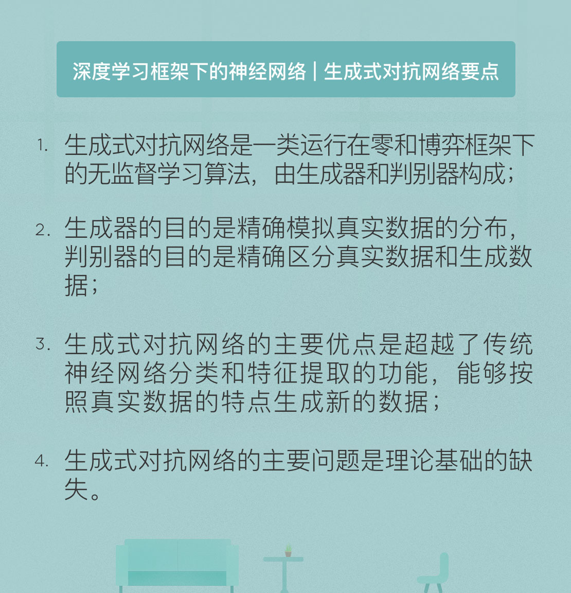

- 00 开篇词 人工智能：新时代的必修课.md.html
- 01 数学基础 九层之台，起于累土：线性代数.md.html
- 02 数学基础 月有阴晴圆缺，此事古难全：概率论.md.html
- 03 数学基础 窥一斑而知全豹：数理统计.md.html
- 04 数学基础 不畏浮云遮望眼：最优化方法.md.html
- 05 数学基础 万物皆数，信息亦然：信息论.md.html
- 06 数学基础 明日黄花迹难寻：形式逻辑.md.html
- 07 机器学习 数山有路，学海无涯：机器学习概论.md.html
- 08 机器学习 简约而不简单：线性回归.md.html
- 09 机器学习 大道至简：朴素贝叶斯方法.md.html
- 10 机器学习 衍化至繁：逻辑回归.md.html
- 11 机器学习 步步为营，有章可循：决策树.md.html
- 12 机器学习 穷则变，变则通：支持向量机.md.html
- 13 机器学习 三个臭皮匠，赛过诸葛亮：集成学习.md.html
- 14 机器学习 物以类聚，人以群分：聚类分析.md.html
- 15 机器学习 好钢用在刀刃上：降维学习.md.html
- 16 人工神经网络 道法自然，久藏玄冥：神经网络的生理学背景.md.html
- 17 人工神经网络 一个青年才俊的意外死亡：神经元与感知器.md.html
- 18 人工神经网络 左手信号，右手误差：多层感知器.md.html
- 19 人工神经网络 各人自扫门前雪：径向基函数神经网络.md.html
- 20 人工神经网络 看不见的手：自组织特征映射.md.html
- 21 人工神经网络 水无至清，人莫至察：模糊神经网络.md.html
- 22 深度学习 空山鸣响，静水流深：深度学习概述.md.html
- 23 深度学习 前方有路，未来可期：深度前馈网络.md.html
- 24 深度学习 小树不修不直溜：深度学习中的正则化.md.html
- 25 深度学习 玉不琢不成器：深度学习中的优化.md.html
- 26 深度学习 空竹里的秘密：自编码器.md.html
- 27 深度学习 困知勉行者勇：深度强化学习.md.html
- 28 深度学习框架下的神经网络 枯木逢春：深度信念网络.md.html
- 29 深度学习框架下的神经网络 见微知著：卷积神经网络.md.html
- 30 深度学习框架下的神经网络 昨日重现：循环神经网络.md.html
- 31 深度学习框架下的神经网络 左右互搏：生成式对抗网络.md.html
- 32 深度学习框架下的神经网络 三重门：长短期记忆网络.md.html
- 33 深度学习之外的人工智能 一图胜千言：概率图模型.md.html
- 34 深度学习之外的人工智能 乌合之众的逆袭：集群智能.md.html
- 35 深度学习之外的人工智能 授人以鱼不如授人以渔：迁移学习.md.html
- 36 深度学习之外的人工智能 滴水藏海：知识图谱.md.html
- 37 应用场景 你是我的眼：计算机视觉.md.html
- 38 应用场景 嘿, Siri：语音处理.md.html
- 39 应用场景 心有灵犀一点通：对话系统.md.html
- 40 应用场景 数字巴别塔：机器翻译.md.html
- 一键到达 人工神经网络复习课.md.html
- 一键到达 应用场景复习课.md.html
- 一键到达 数学基础复习课.md.html
- 一键到达 机器学习复习课.md.html
- 一键到达 深度学习之外的人工智能复习课.md.html
- 一键到达 深度学习复习课.md.html
- 一键到达 深度学习框架下的神经网络复习课.md.html
- 推荐阅读 我与人工智能的故事.md.html
- 新书 《裂变：秒懂人工智能的基础课》.md.html
- 直播回顾 机器学习必备的数学基础.md.html
- 第2季回归 这次我们来聊聊机器学习.md.html
- 结课 溯洄从之，道阻且长.md.html
- 课外谈 “人工智能基础课”之二三闲话.md.html
- （课外辅导）人工神经网络 拓展阅读参考书.md.html
- （课外辅导）数学基础 拓展阅读参考书.md.html
- （课外辅导）机器学习 拓展阅读参考书.md.html
- （课外辅导）深度学习 拓展阅读参考书.md.html
- 捐赠
31 深度学习框架下的神经网络 左右互搏：生成式对抗网络
2016年10月，谷歌大脑的研究者们做了一个有趣的实验：使用三个并不复杂的神经网络执行保密通信的任务，两个合法通信方共享的只有保密的密钥，而没有商定的加解密算法，第三个神经网络则作为窃听者出现。
这种配置显然颠覆了密码学的常识：无论是公钥体制还是私钥体制，加解密的算法都是已知的。如果合法通信双方不能统一加解密的方法，实现保密通信就是“巧妇难为无米之炊”。可谷歌偏偏不信这个邪，他们就是要让神经网络实现双盲的加密与解密。
实验的结果同样令人惊讶：经过不断的试错与调整，接收方可以精确恢复出发送方的明文，而窃听者的错误率稳定在50%左右，意味着她的破译只是随机的猜测。这个实验的意义在于展示出神经网络的潜能：它们不仅能够在欠缺先验规则的条件下，通过对大量数据的无监督学习完成目标，甚至还能够在学习过程中根据实际条件的变化对完成目标的方式进行动态调整。
这个实验的环境，就是在最近两年名声大噪的生成式对抗网络。生成式对抗网络（generative adversarial network）由《深度学习》的第一作者伊安·古德菲洛提出，这是一类在无监督学习中使用的人工智能算法，由两个在零和游戏框架下相互竞争的神经网络实现。“零和游戏”（zero-sum game）这个术语来自于博弈论，意思是博弈双方的利益之和为零。由于一方的收益必然意味着另一方的损失，因而双方不可能实现合作，属于非合作博弈。
生成式对抗网络里的两个玩家一个叫生成器（generator），一个叫判别器（discriminator），均可以采用深度神经网络实现，这两者之间的对抗就是网络训练的主旋律。生成器像是白骨精，想方设法从随机噪声中模拟真实数据样本的潜在分布，以生成以假乱真的数据样本；判别器则是孙悟空，凭一双火眼金睛来判断输入到底是人畜无害的真实数据还是生成器假扮的伪装者。零和博弈中的竞争促使双方不断进化，直到“假作真时真亦假”，真真假假不可区分为止。
两个玩家费这么大劲对抗的目的是什么呢？就是建立数据的生成模型，使生成器尽可能精确估测出数据样本的分布。从学习方式上看，对抗性学习固然属于无监督学习，但对抗的引入使学习可以利用来自判别器的反馈信息，因而又蕴含着某些监督学习的影子。
由于生成器和判别器处于零和博弈之中，因而对网络的训练就可以等效成对以下目标函数的极大-极小问题
\[ \\arg \\min_g \\max_D { -\\dfrac{1}{2} \\int_x \[p_{data}(x) \\log (D(x)) + p_g(x) \\log (1 - D(x))\] {\\rm d}x } \]
其中“极大”是让判别器区分真实数据和伪造数据的准确率最大化，“极小”则是让生成器生成的数据被判别器发现的概率最小化。对整体极大-极小问题的优化可以通过交替迭代训练的方式实现。
交替迭代训练通常从判别器开始，也就是在给定生成器的条件下来求解最优的判别器。由于生成式对抗网络使用的是基于对数几率函数的二分类判别器，因而使用交叉熵作为损失函数是合理的选择。
由于判别器要将来自真实分布的真样本标注为1，因而对数几率函数的输出需要越大越好；反过来，对来自生成器的假样本要标注为0，此时的输出就越小越好，也就是输出的相反数越大越好。这样一来，对判别器的优化就转化为求解以下目标函数的最小值
\[ f(x) = -\\dfrac{1}{2} \\int_x \[p_{data}(x) \\log (D(x)) + p_g(x) \\log (1 - D(x))\] {\\rm d}x \]
式中的\(p_{data}(x)\)表示数据的真实分布，\(p_g(x)\)表示生成器的数据分布，\(D(x)\)则表示判别器对数据\(x\)的概率输出。在给定生成器的条件下可以求出，使以上函数取得最小值的最优解是
\[D^\*_G(x) = \\dfrac{p_{data}(x)}{p_{data}(x) + p_g(x)}\]
这表明生成式对抗网络估计的实际是两个概率分布密度的比值。
优化完判别器，就该轮到生成器了。对生成器的优化意味着希望判别器对假样本的输出越大越好，因而需要优化\(p_g(x)\)，以使前文目标函数中的第二项最小。当且仅当\(p_{data}(x) = p_g(x)\)时，整个网络的目标函数可以取得全局最优解。
这表明在算法收敛时，生成器学到的分布和数据的真实分布完全一致，而判别器对每个样本的输出都等于0.5。在生成式对抗网络的实际训练时，一般采用先更新多次判别器的参数，再对生成器的参数执行一次更新的方法。
既然都是学习数据的分布，那生成式对抗网络和其他生成模型又有什么区别呢？
首先，传统的生成模型是定义了模型的分布，进而去求解参数。比如说在已知数据满足正态分布的前提下，生成模型会通过最大似然估计等方法根据样本来求解正态的均值和方差。可要是生成人脸呢？没人知道人脸满足什么样的先验分布，只能通过不断尝试来逐渐逼近，这时传统的生成模型就无能为力了。生成式对抗网络好就好在摆脱了对模型分布的依赖，也不限制生成的维度，因而大大拓宽了生成数据样本的范围。
其次，生成式对抗网络能够整合不同的损失函数，增加了设计的自由度。生成式对抗网络是没有显式的损失函数的，之所以这么说是因为它训练的目标是生成器，判别器只是训练过程中的副产品。对于生成器来说，因为判别器被用来度量生成分布和真实分布之间的偏差，所以判别器其实就是它的损失函数。而作为损失函数的判别器又会随着真实分布的变化而变化。从这个角度看，生成式对抗网络可以自动学习潜在的损失函数，这是传统的生成模型没法做到的。
除了优点之外，生成式对抗网络也有它的问题。最主要的一个问题就是缺乏理论基础。
回到文首那个密码学的例子：我们只是知道了合法通信方能够达成关于密码算法的共识，但这个共识的达成过程还是个黑箱。关于生成器为什么能够从随机样本出发学习到真实的数据分布也缺乏清晰的理论解释。凡此种种都让生成式对抗网络看起来更像是沙上之塔。没有坚实的理论基础，对算法的推广自然存在困难。除了在图像生成等少数领域表现突出，生成式对抗网络在大多数任务上还是乏善可陈。在算法的原理尚不清楚时，想要实现优化自然是空中楼阁。
生成式对抗网络面临的另一个主要问题就是训练的难度。对抗网络的训练目标是在连续分布的高维度参数下达到纳什均衡，也就是让生成器和判别器的损失函数同时取得最小值。但由于待优化的问题可能是个非凸的问题，直接追求纳什均衡可能会让算法难以收敛，从而引发模型的欠拟合，导致表示能力不足。生成式对抗网络的提出者古德菲洛针对训练难的问题也提出了一系列改进措施，并应用在了半监督学习问题上，取得了不错的效果。
虽然优缺点都很明显，但生成式对抗网络的提出依然可以看成是深度学习的一次突破。给定一只猫的图片，过往的神经网络算法只能区分出它到底是不是猫，还不一定分得准确。可生成式神经网络却能模仿现有的图片画出一只类似的猫。不管这是简单的数据拟合，还是更加高级的抽象特征重组，它都是由机器自己完成的再创作，这种行为方式无疑更加接近于真实的人类。
关于生成式对抗网络还有一个有趣的事实。自2014年诞生以来，各种各样的对抗网络变体层出不穷，其中有名有姓的就超过了200种，给这些变体命名让拉丁字母都不够用了。可这些改进到底有多少效果呢？谷歌公司近期的一项研究表明：没有证据表明哪种变体能够带来实质上的改进。换句话说，改来改去的结果是王小二过年，一年不如一年。
出现这种问题的原因就在于理论基础的缺失。没有理论基础就没有明确的改进方向，因而只能像没头苍蝇一样，从应用问题出发盲目地摸索优化技巧。运气好的话，通过优化架构或是损失函数可以在特定任务上获得性能的提升，但提升表现的适用范围往往狭窄，换一个场合就不好用了。这其实不只是生成式对抗网络，更是整个深度学习所深陷的“炼金术”尴尬处境的体现。
今天我和你分享了生成式对抗网络的原理与机制。其要点如下：
- 生成式对抗网络是一类运行在零和博弈框架下的无监督学习算法，由生成器和判别器构成；
- 生成器的目的是精确模拟真实数据的分布，判别器的目的是精确区分真实数据和生成数据；
- 生成式对抗网络的主要优点是超越了传统神经网络分类和特征提取的功能，能够按照真实数据的特点生成新的数据；
- 生成式对抗网络的主要问题是理论基础的缺失。
生成式对抗网络的一个重要的潜在应用就是让人工智能在没有明确指导的情况下学习，使算法的学习方式向人类的学习方式转变。那么如何看待生成式对抗网络在通用人工智能研究中的前景呢？
欢迎发表你的观点。

© 2019 - 2023 Liangliang Lee. Powered by gin and hexo-theme-book.